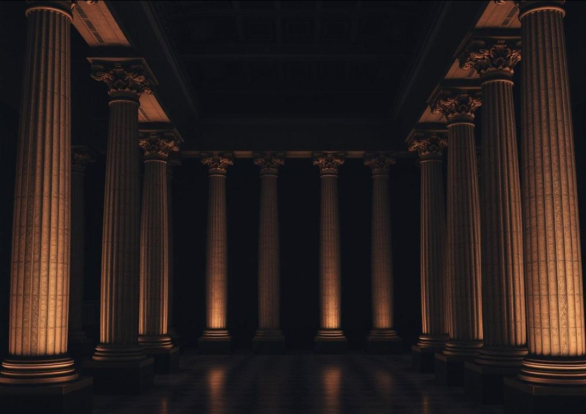
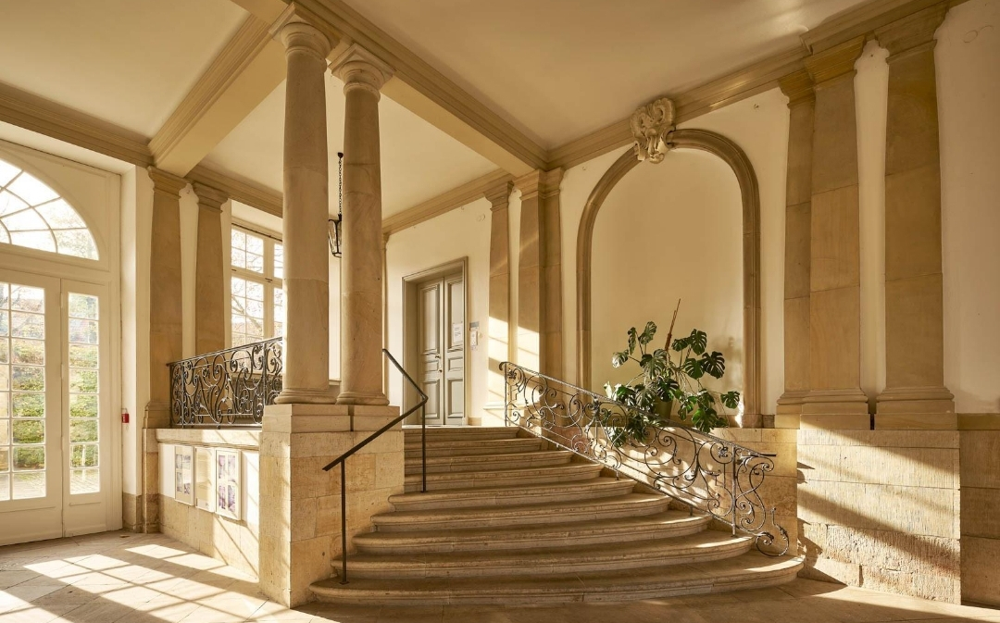
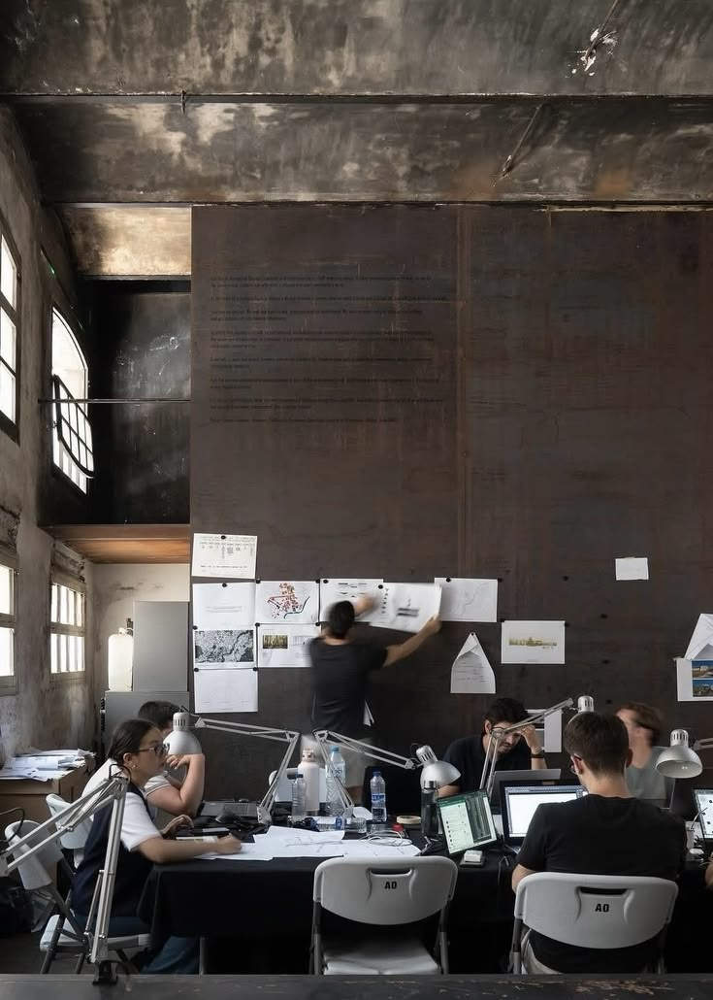

01 / ARCHITECTURE
Architecture
Shaping spaces with purpose and proportion.
THE ART OF DEFINING SPACE
Architecture is not simply about creating spaces. It is about defining how spaces are experienced.

01 / OUR PHILOSOPHY
We believe great architecture exists beyond trends. It is born from balance, proportion, material, and purpose. Inspired by classical principles and shaped by contemporary vision, we create spaces that stand apart.
02 / THE STUDIO
JANUS is an architecture and interior design studio dedicated to creating distinctive environments. We bring together architectural thinking, refined aesthetics, and thoughtful detailing to shape spaces with lasting character.

03 / WHAT WE DO

Shaping spaces with purpose and proportion.

Creating experiences through material and atmosphere.
04 / OUR PRINCIPLES
Harmony in every proportion.
Every detail has a purpose.
Beauty shaped by material.
Design beyond passing trends.
THE JANUS PERSPECTIVE
We don't simply design spaces. We define what they can become.
LET'S CREATE SOMETHING DISTINCTIVE ↗HAVE A PROJECT IN MIND?